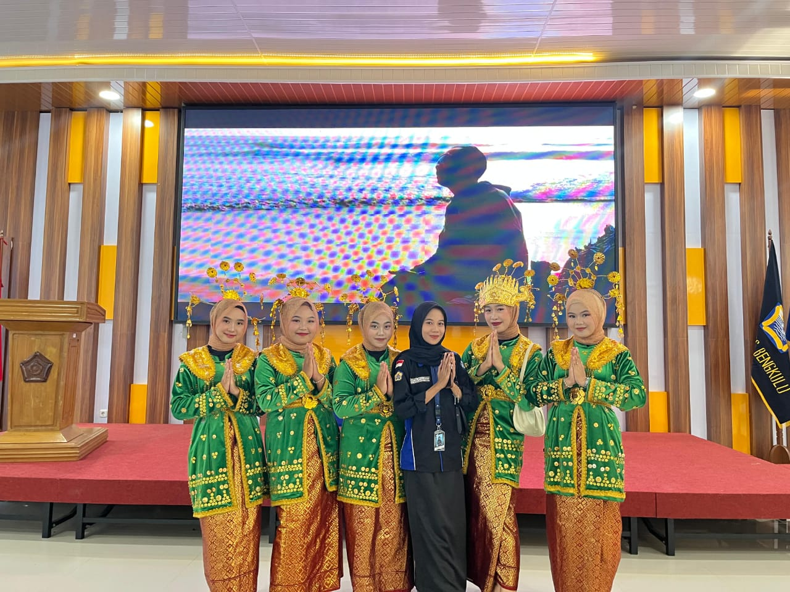
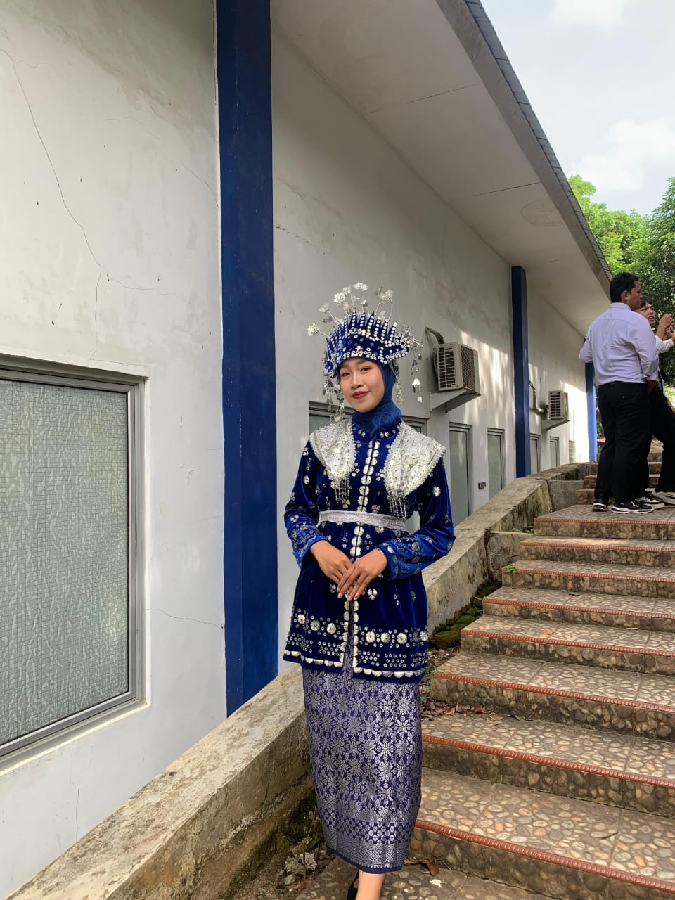

My Portfolio

Saat aku ikut menari untuk pembukaan NEC(Nasional English Competition). National English Competition adalah acara yang juga diadakan oleh prodi, yang mana acara ini bersifat nasional. Peserta perlombaan pu terdiri dari berbagai penjuru Indonesia.

FKIP FAIR 2024
Saat aku mengikuti lomba untuk mewakili prodi. Acara FKIP FAIR ini diadakan oleh Fakultas.

Penutupan Dies Natalis
Penutupan acara lomba yang diadakan oleh prodi. Prodi kami mengadakan acara dengan berbagai lomba didalamnya. Yang mana peserta perlombaan adalah seluruh mahasiswa dari Prodi Pendidikan Bahasa Inggris.
